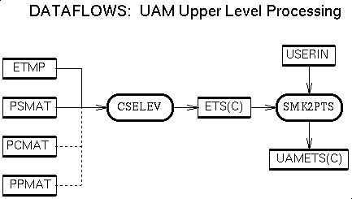
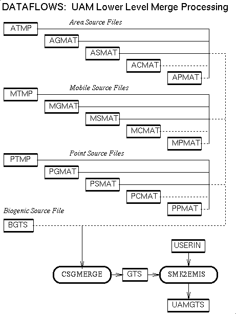

Then program CSGLMERGE prompts the user for, and reads in together the gridding matrices AGMAT and PGMAT, the speciation matrices ASMAT and PSMAT, and optionally the control matrices ACMAT and PCMAT, and multiplies them together to form the composite point and area source transform matrices. In order not to use a control matrix in the composite transform matrix, , the user should respond "NONE" to the prompt for it.
For each time step, CSGLMERGE then reads the source level emissions from ATMP and PTMP and the plume layer fractions from PLAY, multiplies them together by the composite transform matrices, merges the results together, and writes them out to three-dimensional layered model ready emissions files EMIS3D or EMISC3D. Alternatively, the user may use the inventory files AREA and PNTS in order to construct three-dimensional layered annual total files for analysis and quality assurance purposes, instead.
Data flow diagrams giving an overview of SMOKE merge processing, for EDSS are available in Postscript, in GIF, in X bitmap, and in JPEG. Diagrams giving an overview of the main line of EDSS SMOKE processing and how merge processing fits into that whole are available in Postscript, in GIF, in X bitmap, and in JPEG. Note that additional options for analysis and quality assurance processing are detailed in the diagrams on merge processing.
For each time step, CSGMERGE then reads the source level emissions from ATMP and PTMP, multiplies them together by the composite transform matrices, merges the results together, and writes them out to lower level model ready emissions files EMIS2D or EMISC2D. Alternatively, the user may use the inventory files AREA and PNTS in order to construct lower level annual total files for analysis and quality assurance purposes, instead.
For UAM processing, the EMIS2D file is then used as an input to program SMK2EMIS which reads EMIS2D and the relevant USERIN file for the UAM simulation being performed, and constructs the UAMGTS or UAMGTSC UAM-format emissions file for input into the UAM. The ROM counterpart to SMK2EMIS has not yet been constructed.
Data flow diagrams describing SMOKE merge processing for lower level emissions for the Urban Airshed Model and similar air quality chemistry and transport models are available in Postscript, in GIF, in X bitmap, and in JPEG; diagrams showing how SMOKE lower level merge processing fits into the totality of UAM-style merge processing are also available in Postscript, in GIF, in X bitmap, and in JPEG. Diagrams giving an overview of the main line of UAM SMOKE processing and how merge processing fits into that whole are available for UAM air quality modeling in Postscript, in GIF, in X bitmap, and in JPEG. Note that additional options for analysis and quality assurance processing are detailed in the diagrams on merge processing.
For each time step, CSELEV then reads the source level emissions PTMP, multiplies it together by the composite transform matrix, and writes the result out to upper level model ready emissions files ETS or ETSC. For UAM, The ETS file is then used as an input to program SMK2PTS which reads ETS and the relevant USERIN file for the UAM simulation being performed, and constructs the UAMETS or UAMETSC UAM-format emissions file for input into the UAM's PTSRCE plume rise preprocessor. The ROM counterpart to SMK2PTS has not yet been constructed.
Data flow diagrams describing SMOKE merge processing for upper level emissions for the Urban Airshed Model and similar air quality chemistry and transport models are available in Postscript, in GIF, in X bitmap, and in JPEG; diagrams showing how SMOKE upper level merge processing fits into the totality of UAM-style merge processing are also available in Postscript, in GIF, in X bitmap, and in JPEG. Diagrams giving an overview of the main line of UAM SMOKE processing and how merge processing fits into that whole are available for UAM air quality modeling in Postscript, in GIF, in X bitmap, and in JPEG. Note that additional options for analysis and quality assurance processing are detailed in the diagrams on merge processing.
| Description | Processing Order | Input Files | Input Params | Input Envt Vars |
| Output Files | Include File Params | Upcoming Features | Known Bugs | Usage |

Data flow diagrams for CSELEV and how it fits into upper level merge processing for UAM oriented modeling are available in Postscript, in GIF, in X bitmap, and in JPEG; diagrams showing how SMOKE upper level merge processing fits into the totality of UAM-style merge processing are also available in Postscript, in GIF, in X bitmap, and in JPEG.
# # setenvs for logical file names: # setenv PSMAT <path-name for speciation matrix file> setenv PCMAT <path-name for control matrix file> setenv ETMP <path-name for (temporally allocated) point source file> setenv ETS <path-name for (temporally allocated) output file> # # Now run the program, using a here-document for input: # cselev << EOF Yes, continue with the program PSMAT ! point source speciation matrix logical name PCMAT ! point source control matrix logical name, or "NONE" ETMP ! point source gridding matrix logical name ETS ! output file logical name EOF # # done #
| Description | Processing Order | Input Files | Input Params | Input Envt Vars |
| Output Files | Include File Params | Upcoming Features | Known Bugs | Usage |
| Description | Processing Order | Input Files | Input Params | Input Envt Vars |
| Output Files | Include File Params | Upcoming Features | Known Bugs | Usage |

Data flow diagrams for CSGLMERGE and how it fits into layered merge processing for EDSS/Models-3 oriented modeling are available in Postscript, in GIF, in X bitmap, and in JPEG
# # setenvs for logical file names: # setenv AGMAT <path-name for area source gridding matrix file> setenv ASMAT <path-name for area source speciation matrix file> setenv ACMAT <path-name for area source control matrix file> setenv APMAT <path-name for area source projection matrix file> setenv ATMP <path-name for (temporally allocated) area source file> setenv BTMP <path-name for (temporally allocated) biogenic source file> setenv MGMAT <path-name for mobile source gridding matrix file> setenv MSMAT <path-name for mobile source speciation matrix file> setenv MCMAT <path-name for mobile source control matrix file> setenv MPMAT <path-name for mobile source projection matrix file> setenv MTMP <path-name for (temporally allocated) mobile source file> setenv PGMAT <path-name for point source gridding matrix file> setenv PSMAT <path-name for point source speciation matrix file> setenv PCMAT <path-name for point source control matrix file> setenv PPMAT <path-name for point source projection matrix file> setenv PLAY <path-name for point source plume rise layer fractions file> setenv PTMP <path-name for (temporally allocated) point source file> setenv EMISC3D <path-name for (temporally allocated) output file> # # Now run the program, using a here-document for input: # csgmerge << EOF Yes, continue with the program ATMP ! area source emissions file, or "NONE" AGMAT ! area source gridding matrix logical name ASMAT ! area source speciation matrix logical name ACMAT ! area source control matrix logical name, or "NONE" APMAT ! area source projection matrix logical name, or "NONE" BTMP ! biogenic source emissions file, or "NONE" MTMP ! mobile source emissions file, or "NONE" MGMAT ! mobile source gridding matrix logical name MSMAT ! mobile source speciation matrix logical name MCMAT ! mobile source control matrix logical name, or "NONE" MPMAT ! mobile source projection matrix logical name, or "NONE" PTMP ! point source emissions file, or "NONE" PGMAT ! point source gridding matrix logical name PSMAT ! point source speciation matrix logical name PLAY ! point source plume rise layer fractions file PCMAT ! point source control matrix logical name, or "NONE" PPMAT ! point source projection matrix logical name, or "NONE" EMISC3D ! output file logical name, or "NONE" EOF # # done #
| Description | Processing Order | Input Files | Input Params | Input Envt Vars |
| Output Files | Include File Params | Upcoming Features | Known Bugs | Usage |
Data flow diagrams for CSGMERGE and how it fits into lower level merge processing for UAM oriented modeling are available in Postscript, in GIF, in X bitmap, and in JPEG; diagrams showing how SMOKE lower level merge processing fits into the totality of UAM-style merge processing are also available in Postscript, in GIF, in X bitmap, and in JPEG.
# # setenvs for logical file names: # setenv AGMAT <path-name for area source gridding matrix file> setenv ASMAT <path-name for area source speciation matrix file> setenv ACMAT <path-name for area source control matrix file> setenv APMAT <path-name for area source projection matrix file> setenv ATMP <path-name for (temporally allocated) area source file> setenv BTMP <path-name for (temporally allocated) biogenic source file> setenv MGMAT <path-name for mobile source gridding matrix file> setenv MSMAT <path-name for mobile source speciation matrix file> setenv MCMAT <path-name for mobile source control matrix file> setenv MPMAT <path-name for mobile source projection matrix file> setenv MTMP <path-name for (temporally allocated) mobile source file> setenv PGMAT <path-name for point source gridding matrix file> setenv PSMAT <path-name for point source speciation matrix file> setenv PCMAT <path-name for point source control matrix file> setenv PPMAT <path-name for point source projection matrix file> setenv PTMP <path-name for (temporally allocated) point source file> setenv EMISC2D <path-name for (temporally allocated) output file> # # Now run the program, using a here-document for input: # csgmerge << EOF Yes, continue with the program ATMP ! area source emissions file, or "NONE" AGMAT ! area source gridding matrix logical name ASMAT ! area source speciation matrix logical name ACMAT ! area source control matrix logical name, or "NONE" APMAT ! area source projection matrix logical name, or "NONE" BTMP ! biogenic source emissions file, or "NONE" MTMP ! mobile source emissions file, or "NONE" MGMAT ! mobile source gridding matrix logical name MSMAT ! mobile source speciation matrix logical name MCMAT ! mobile source control matrix logical name, or "NONE" MPMAT ! mobile source projection matrix logical name, or "NONE" PTMP ! point source emissions file, or "NONE" PGMAT ! point source gridding matrix logical name PSMAT ! point source speciation matrix logical name PCMAT ! point source control matrix logical name, or "NONE" PPMAT ! point source projection matrix logical name, or "NONE" EMISC2D ! output file logical name, or "NONE" EOF # # done #
| Description | Processing Order | Input Files | Input Params | Input Envt Vars |
| Output Files | Include File Params | Upcoming Features | Known Bugs | Usage |
The program ensures that the temporal, spatial, and variable specifications on the EMIS2D and USERIN files match before processing the elevated point sources. The program will abort if temporal or spatial details do not match, but will allow the user to continue if all output species do not appear in the input file.
The program will also prompt the user for a title for the header of the output file. In the usual case that the EMISSIONS file is being created, the default value of "EMISSIONS" is used. The program could potentially be used for other gridded NetCDF I/O API to UAM conversions.
# # setenvs for logical input file names: # setenv EMISC2D <path-name for SMOKE lower level emissions file> setenv USERIN <path-name for relevant UAM USERIN file> # # setenvs for logical output file names: # setenv UAMGTSC <path-name for UAM lower level point sources file EMISSIONS> # # Now run the program, using a here-document for input: # smk2emis << EOF Y EMISC2D USERIN EMISSIONS UAMGTSC EOF # # done #
| Description | Processing Order | Input Files | Input Params | Input Envt Vars |
| Output Files | Include File Params | Upcoming Features | Known Bugs | Usage |
The program ensures that the temporal and variable specifications on the ETS and USERIN files match before processing the elevated point sources. The program will abort if temporal details do not match, but will allow the user to continue if all output species do not appear in the input file.
The program will also prompt the user for the vertical method type to be specified in the output file. The vertical method "PLUMERISE" enables the user to drive UAM 4, and the vertical method "STACKHGT" enables the user to drive UAM-V.
# # setenvs for logical input file names: # setenv PNTS <path-name for SMOKE point source annual inventory file> setenv ETSC <path-name for SMOKE elevated, speciated, controled emissions file> setenv USERIN <path-name for relevant UAM USERIN file> # # setenvs for logical output file names: # setenv UAMETS <path-name for UAM elevated point sources file PTSOURCE> # # Now run the program, using a here-document for input: # smk2pts << EOF Yes, continue with the program PNTS ! point source annual inventory file ETSC _or_ ETS USERIN 24 PLUMERISE EOF # # done #
| Description | Processing Order | Input Files | Input Params | Input Envt Vars |
| Output Files | Include File Params | Upcoming Features | Known Bugs | Usage |
They are time-stepped EDSS/Models-3 I/O API file of type GRDDED3 (gridded), with time step 1 hour, and dimensions appropriate for the model grid: the number of layers is 1, while the numbers NCOLS of columns and NROWS of rows are defined in the GRDIMS3.EXT include file. The variables in the files are the gridded model speciated optionally-controlled hourly time stepped combined emissions, in units of moles per hour. Names for the variables are the EMNAM names from the CHDIMS3.EXT include file. For the North Carolina domain UAM Carbon-Bond IV prototype, the list of variable names is the following:
EMIS3D is the emissions prototype's model-ready hourly time stepped gridded layered optionally-controlled combined (point, area, mobile, and optionally biogenic) emissions files. They are portable, network transparent, machine architecture independent direct access binary files produced by program CSGLMERGE and used by the chemistry-transport model.
They are time-stepped EDSS/Models-3 I/O API file of type GRDDED3 (gridded), with time step 1 hour, and dimensions appropriate for the model grid: the number NLAYS of layers is EMLAYS, defined in include file LADIMS3.EXT, while the numbers NCOLS of columns and NROWS of rows are defined in the GRDIMS3.EXT include file. The variables in the file are the gridded model speciated optionally-controlled hourly time stepped combined emissions, in units of moles per hour. Names for the variables are the EMNAM names from CHDIMS3.EXT include file. For the North Carolina domain UAM Carbon-Bond IV prototype, the list of variable names is the following:
They are time-stepped EDSS/Models-3 I/O API file of type IDDATA3 (ID-referenced data), with time step 1 hour. The dimensions are as follows:
The variables in the file are the source level model speciated time stepped elevated point source emissions, in units of moles per hour. Names for the variables are the EMNAM chemical-mechanism model species names from the CHDIMS3.EXT include file. For the North Carolina UAM domain Carbon-Bond IV prototype, the list of variable names is the following:
The variables in the files are the source level model speciated time stepped elevated point source emissions, in units of moles per hour. Names for the variables are the EMNAM chemical-mechanism model species names from the CHDIMS3.EXT include file. For the North Carolina UAM domain Carbon-Bond IV prototype, the list of variable names is the following:
The variables in the files are the gridded model speciated optionally-controlled hourly time stepped combined emissions, in units of moles per hour. For the North Carolina domain UAM Carbon-Bond IV prototype, the list of variable names is the following:
GRIDDESC is read by the EDSS/Models-3 DSCGRID() and DSCOORD() utility routines. It has two segments. Each segment has a 1-line header (which by convention provides titles for the columns in the data records), a sequence of data records, and a terminal record with name field blank (' '). The first segment is the coordinate-system-description segment and consists of text records giving coordinate-system name and descriptive parameters P_ALP, P_BET, P_GAM, XCENT, and YCENT. The second segment is the grid-description segment, and consists of text records giving grid name, related coordinate-system name and descriptive parameters XORIG, YORIG, XCELL, YCELL, NCOLS, NROWS, and NTHIK.
Each data record in these files consists of three list-formatted lines (i.e., items are separated by either blanks or commas). Name fields are quoted strings. Numeric fields are given in double precision. The records have the following organization, depending upon whether they are in the first or second segments:
COORD-NAME
COORDTYPE, P_ALP, P_BET, P_GAM
XCENT, YCENT
or
GRID-NAME
COORD-NAME, XORIG, YORIG, XCELL, YCELL
NCOLS, NROWS, NTHIK
There are at most 32 coordinate systems and 256 grids listed in one of these files. These files are small enough to be archived easily with a study, and have a sufficiently simple format that new ones can easily be constructed "by hand."
EDSS/Models-3 I/O API logical function DSCGRID() manages access to GRIDDESC (in fact, serves as an operational definition of the GRIDDESC file format), and gets grid and coordinate system descriptive parameters COORDNAME, P_ALP, P_BET, P_GAM, XCENT, YCENT, XORIG, YORIG, XCELL, YCELL, NCOLS, NROWS, and NTHIK for the specified grid name. Returns TRUE iff the requested grid is found in the GRIDDESC file. LOGICAL ENTRY DSCOORD() of DSCGRID() gets coordinate-system descriptive parameters P_ALP, P_BET, P_GAM, XCENT, and YCENT for the specified coordinate system name (also returning TRUE iff the coordinate system is found in the GRIDDESC file).
<FIPS code> <time zone>The interpretation of the lines in terms of the FIPS field they contain is as follows:
Note also that the time zones for the US for Standard Time are the following (numbered in terms of numbers of hours west of Greenwich Mean Time (GMT)):
Previous: Biogenic Emissions Processing
Next: Raw (input) Data Requirements and Procedures
{kind=link}
{kind=link}
{kind=link}
{kind=link}
{kind=link}
{kind=link}
{kind=link}
{kind=link}
{kind=link}
{kind=link}